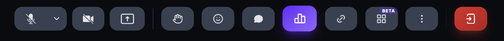
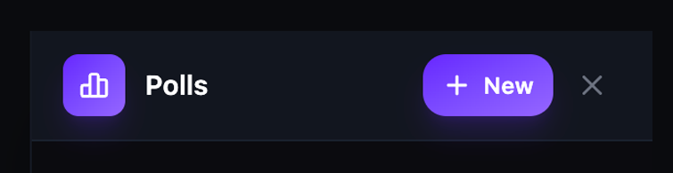
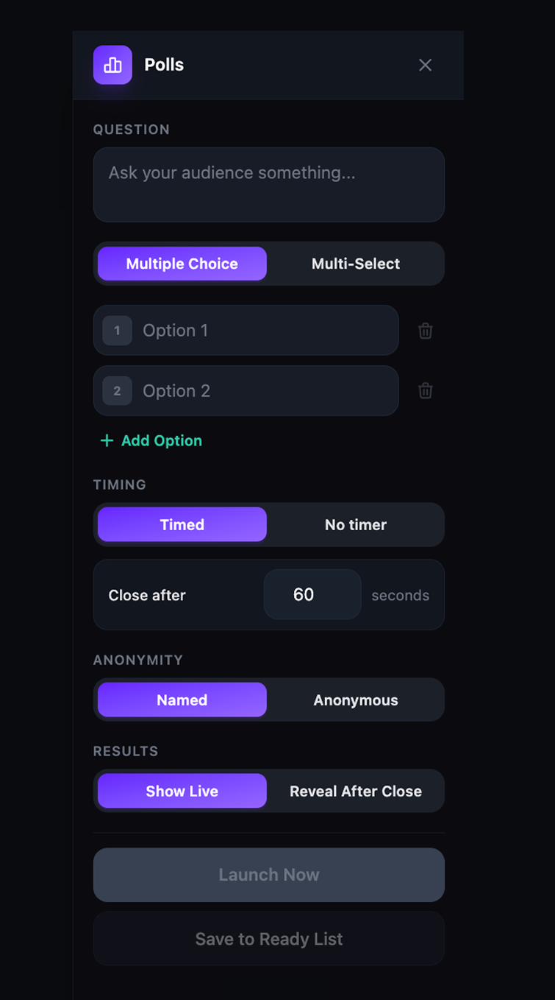
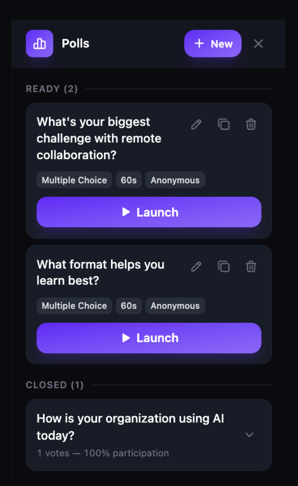
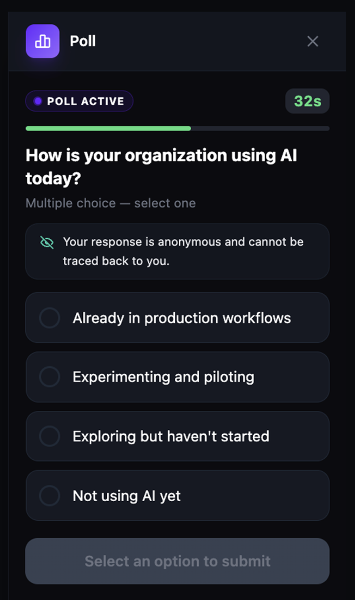
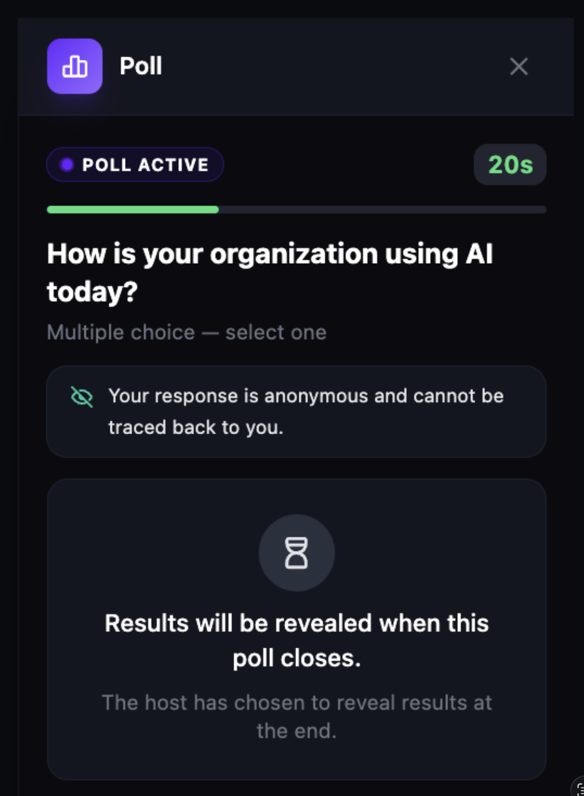
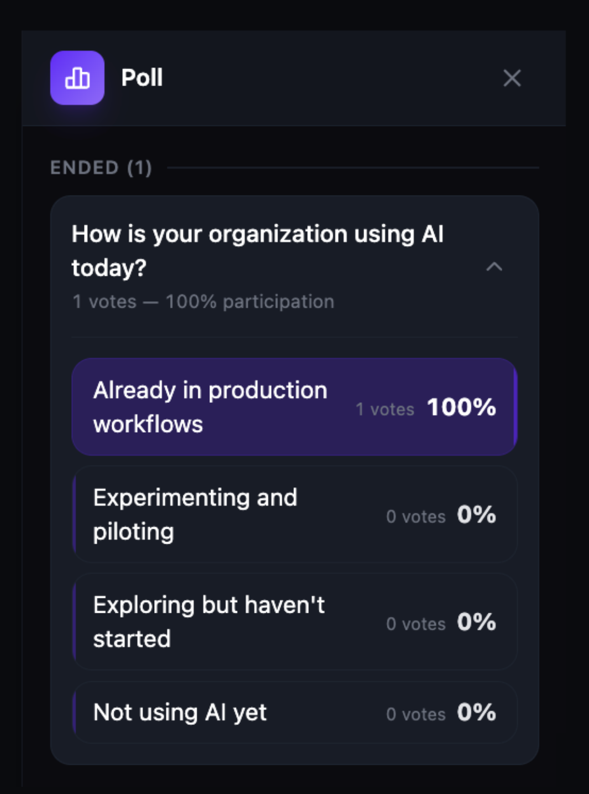

Create polls in live sessions
Polls let you ask your audience a question during a live session or webinar and collect responses in real time. You can create multiple-choice or multi-select polls, set a timer, choose anonymous or named voting, and control when results are revealed. This article covers how to create, launch, manage, and review polls.
Before you get started
- You must be a host or moderator of the session to create and launch polls.
- Polls are available in both live sessions and webinars.
- All participants can view and respond to active polls.
Open the Polls panel
- Join or start a live session or webinar.
- Click the Poll button (bar chart icon) in the call toolbar. The button turns purple when the panel is open.
- The Polls panel opens on the right side of the screen.

If no polls have been created yet, the panel displays an empty state with the message "No polls yet. Create one to engage your audience." Click + New at the top of the panel to create your first poll.

Create a poll
- In the Polls panel, click + New.
- Enter your question in the Question field.
-
Choose a poll type:
- Multiple Choice — participants select a single answer.
- Multi-Select — participants can select more than one answer.
- Enter your answer choices in the Option fields. Click + Add Option to add more options, or click the trash icon to remove one.
-
Set the Timing:
- Timed — the poll closes automatically after the number of seconds you set in the Close after field.
- No timer — the poll stays open until you close it manually.
-
Set Anonymity:
- Named — participant names are attached to their votes.
- Anonymous — votes are collected without identifying who voted for what.
-
Choose how Results are shared:
- Show Live — results update in real time as participants vote.
- Reveal After Close — results are hidden until the poll closes.

Launch or save a poll
Once your poll is configured, you have two options:
- Launch Now — sends the poll to all participants immediately. A poll notification appears on every participant's screen.
- Save to Ready List — saves the poll without launching it. You can launch it later from the Ready section of the Polls panel.
Manage the Ready List
Saved polls appear in the Ready section at the top of the Polls panel. Each poll card shows the question text, poll type, timer duration, and anonymity setting.
From a Ready poll card, you can:
- Launch — click the purple Launch button to send the poll to participants.
- Edit (pencil icon) — modify the question, options, or settings before launching.
- Duplicate (copy icon) — create a copy of the poll to use as a starting point for a new one.
- Delete (trash icon) — remove the poll permanently.

The participant experience
When a poll is launched, a poll notification appears for all participants. The poll panel shows the question, answer options, and a countdown timer (if timed). A green "POLL ACTIVE" badge and progress bar indicate the poll is live.
- The poll appears on each participant's screen with the question and all answer options.
- If the poll is anonymous, a notice confirms that responses cannot be traced back to the participant.
- The participant selects their answer and clicks Submit. The button text reads "Select an option to submit" until an option is chosen.
-
After submitting:
- If results are set to Show Live, the participant sees live vote counts and percentages.
- If results are set to Reveal After Close, the participant sees a message: "Results will be revealed when this poll closes."


View poll results
When a poll closes — either because the timer runs out or the host closes it manually — it moves to the Closed section in the Polls panel.
Click the expand arrow on a closed poll to view its results. Each option shows the number of votes and the percentage of total responses. The winning option is highlighted.
The poll card also displays the total number of votes and the participation rate.
